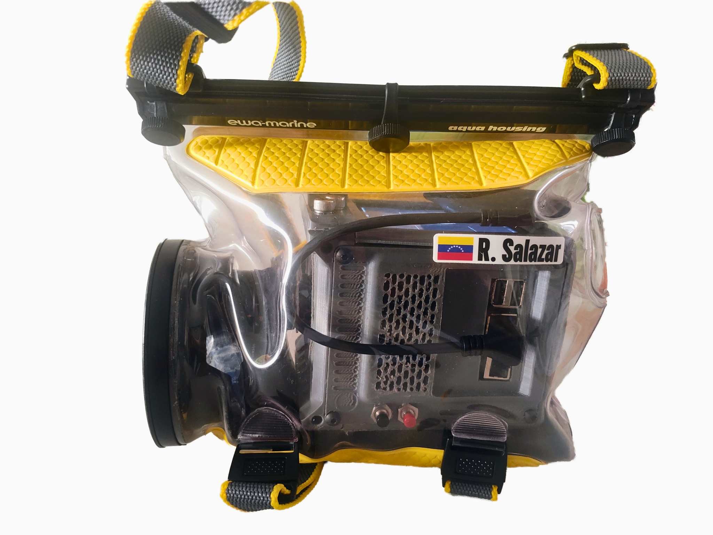
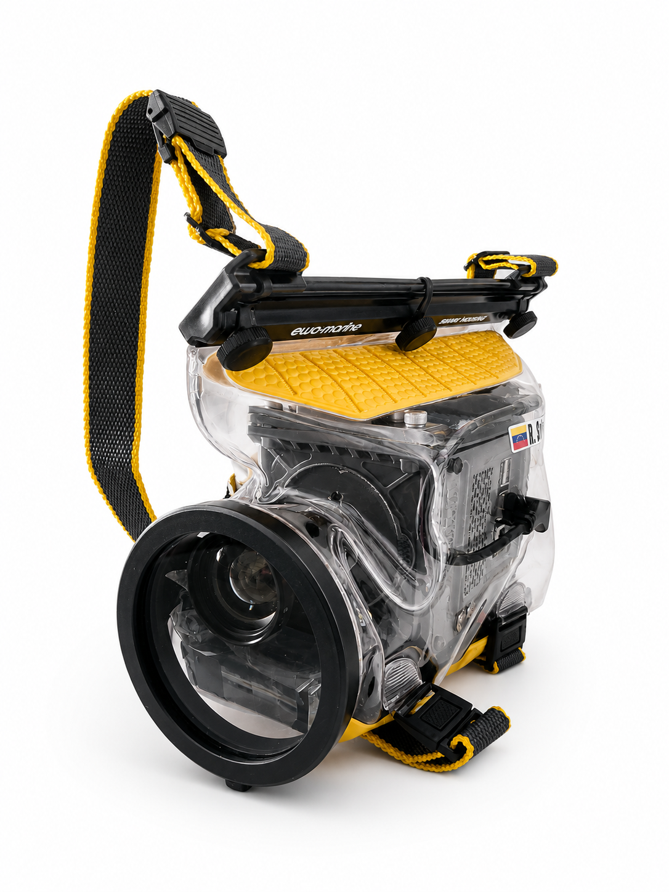
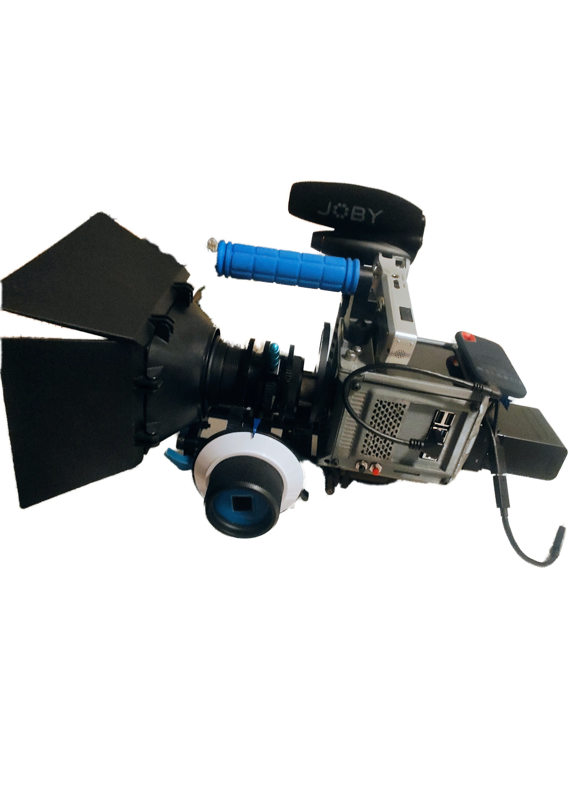
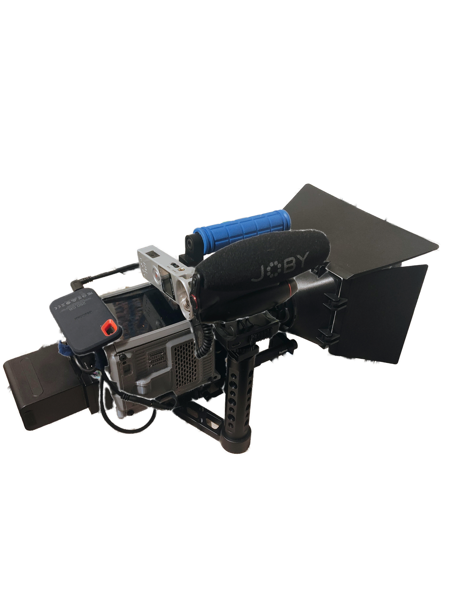

One of my favorite ways to waste time is surfing eBay for old cameras, strange accessories, and cheap gear that probably has a very specific history. I was not really planning to turn Cine ROro into an underwater camera, but then I found this used Ewa-Marine plastic aqua housing and thought: maybe this could work.
It looked old, simple, and a little ridiculous, which is exactly the kind of thing that makes a DIY camera experiment more fun. My CinePi build was definitely not designed for underwater shooting, but the housing had enough space for the camera body, lens, cables, and a little bit of improvisation.
A Closer Look at the Underwater Setup
Before testing it with water, I wanted to document how the camera actually fit inside the housing. From the side, you can see how tight and improvised the setup is: the lens, body, cable, and the baterry moved from the back to the front under the lens all sitting inside an old flexible case that was definitely not made with Cine ROro in mind.


Two views of the setup before the pool test. The side view shows how everything fits inside the housing, while the front view makes it look almost like a real underwater cinema rig.
The Very Scientific Bathtub Test
Before putting the camera anywhere near a pool, I needed to know if the case was going to leak. So I did the most professional test possible: I put a shirt inside the housing, closed everything, and pushed it under water in my bathtub.
The idea was simple. If the shirt came out wet, the camera was staying dry and far away from this thing. If the shirt came out dry, then maybe Cine ROro had a chance.

The shirt test. Cheap, nervous, and surprisingly useful.
Result: the shirt stayed dry, so the pool test was officially approved by my very questionable engineering department.
Taking It to the Pool
After the bathtub test, I took the setup to the swimming pool and recorded some quick underwater footage. I honestly expected the whole thing to be more awkward than useful, but the footage looked better than I thought it would.
The case softened the image a bit and gave everything this strange DIY underwater look. The only detail that became more obvious underwater is the fungus in the lens. On normal footage it can feel like a small vintage imperfection, but underwater, with bright highlights and water movement, it shows up more clearly.

The version I wish I looked like while filming. The real pool test was much less cinematic, but still fun.
Footage Example
I will add the footage here once I upload it. It is a short swimming pool test, mostly to see how the housing, lens, and camera behave underwater. The image is not perfect, but it has a look that I really like, especially considering how improvised the whole setup was.
Camera Setup for This Test
Next Stop: Lafayette Wildlife Documentary?
Since I live in Lafayette, the next completely reasonable step is obviously to send Cine ROro into the water to calmly document an alligator swimming, like this is a National Geographic production with a suspiciously cheap underwater housing from eBay. What could possibly go wrong?
For practical, legal, and basic survival-related reasons, this ambitious production plan is currently staying in the highly advanced concept-art stage. Still, seeing this tiny DIY cinema camera floating near an alligator feels like the most Louisiana direction this project could take.

Future wildlife cinematography plan: probably not approved by anyone responsible.
Final Thoughts
This is why I like building and testing strange camera setups. It does not have to be perfect to be useful. Sometimes the point is just to try something, learn what breaks, and see what kind of image comes out of it.
Cine ROro was already a learning project, and this underwater test made it even more fun. The housing is cheap and old. The lens has fungus. The setup looks a little chaotic. But it worked, and the footage has a character that feels very much like this camera.
Small lesson: never underestimate the creative potential of random eBay finds, a bathtub, and a camera you are slightly afraid to put underwater.
Final Note: Current Ground Version
Before wrapping this up, I wanted to leave a quick update on the current status of Cine ROro on land, separate from the underwater version. Since the last post, the regular setup has become a little more complete and a lot more camera-like.


The current ground setup of Cine ROro with a few new additions since the last build update.
The biggest upgrades are a Matte Box Follow Focus Kit, a new Vintage Fujinon H6x12.5R TV Super Zoom Lens, and a SMALLRIG Camera Base Plate Kit with 15mm LWS Rod Rail Clamp. I also added a height-adjustable lens support bracket, which helps the whole setup feel much more stable and better supported.
It is still very much a DIY camera, but it is starting to move closer to the kind of handheld rig I originally imagined. So while the underwater version was the fun side quest, the ground version has also been quietly getting better in the background.
I am also excited to try the new Cinemate 3.3.1 release by Tiramisioux. Cinemate has been a big part of this camera experiment, so I am curious to see how the new version feels with the updated setup once I start testing it.
Current status: Cine ROro is now rocking a matte box, follow focus, Fujinon zoom, rod-based support system, and a more solid overall rig for regular shooting above water.